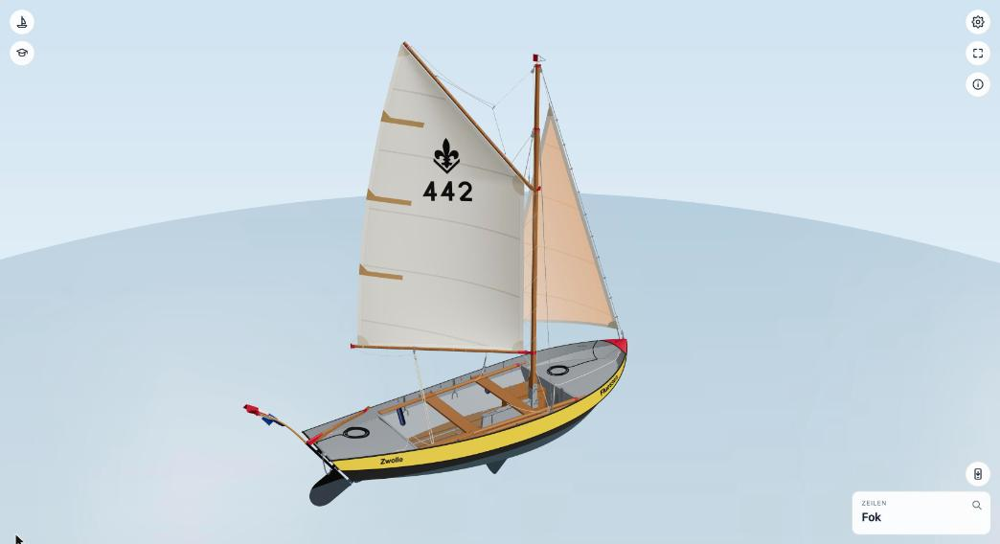
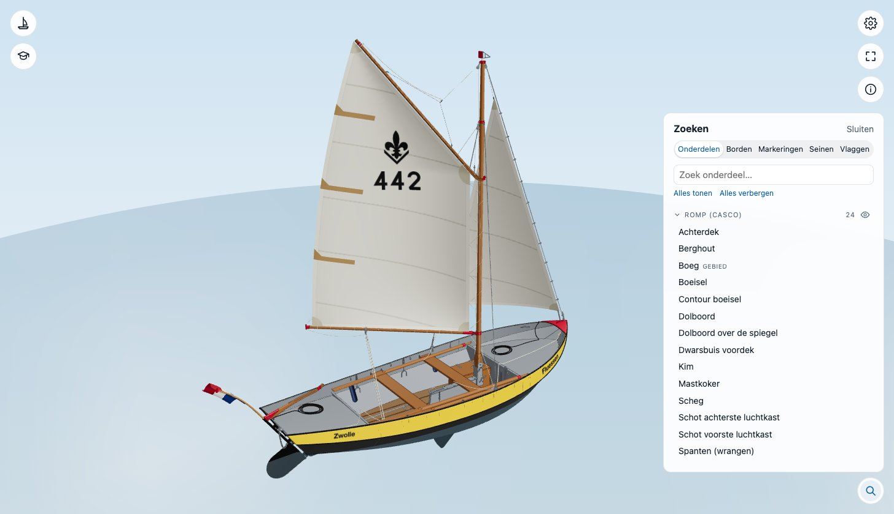

Onderdelen bekijken
Elk onderdeel van de boot heeft een naam: van romp en doften tot het kleinste harpje.
Een onderdeel aanklikken


Klik of tik op een onderdeel. Het licht op en rechtsonder verschijnt een kaartje met de groep (hier Zeilen) en de naam (Fok). Als je met de muis over de boot beweegt, zie je de naam al voordat je klikt. Een klik naast de boot, of Esc, heft de selectie weer op.
Zoeken in de lijst


Het vergrootglas rechtsonder opent Zoeken, met op het tabblad Onderdelen alle onderdelen per groep. Typ in het zoekveld om te filteren en klik op een naam: de camera vliegt erheen. Elke groep heeft een oogje waarmee je de hele groep verbergt of weer laat zien, zodat je bijvoorbeeld zonder zeilen in de kuip kunt kijken. Alles tonen en Alles verbergen doen dat voor alle groepen tegelijk.
In hetzelfde paneel staan ook de tabbladen Borden, Markeringen, Seinen en Vlaggen. Zie Verkeerstekens.
Met een klik bedienen
Sommige onderdelen doen iets als je erop klikt:
| Onderdeel | Wat een klik doet |
|---|---|
| Dol of dolkettinkje | De dol in de dolpot, of eruit |
| Riem | In de dol, of terug op de doften; beide riemen in hun dol is roeien |
| Wrikriem | In het wrikgat, of terug; in het wrikgat is wrikken |
| Zwaard, zwaardloper, borgpen of kettinkje | Het midzwaard een stand verder: neer, half, op |
| Mik of mikhouders | De mik omhoog in de houders of terug op de vlonder |
| Stootwil | Overboord, of weer binnen |
| Bakskist | Het deksel open of dicht |
| Ankerlijn of anker | Het anker uit, of op |
| Helmstok | Slepen stuurt het roer |
Wil je alle onderdelen met hun andere namen op een rij? Zie de lijst met onderdelen.